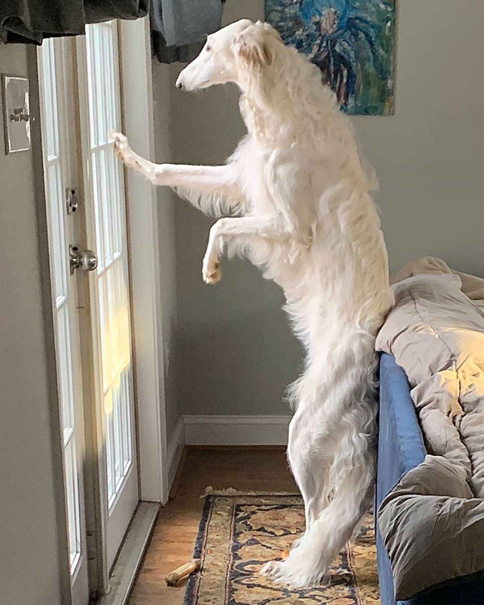
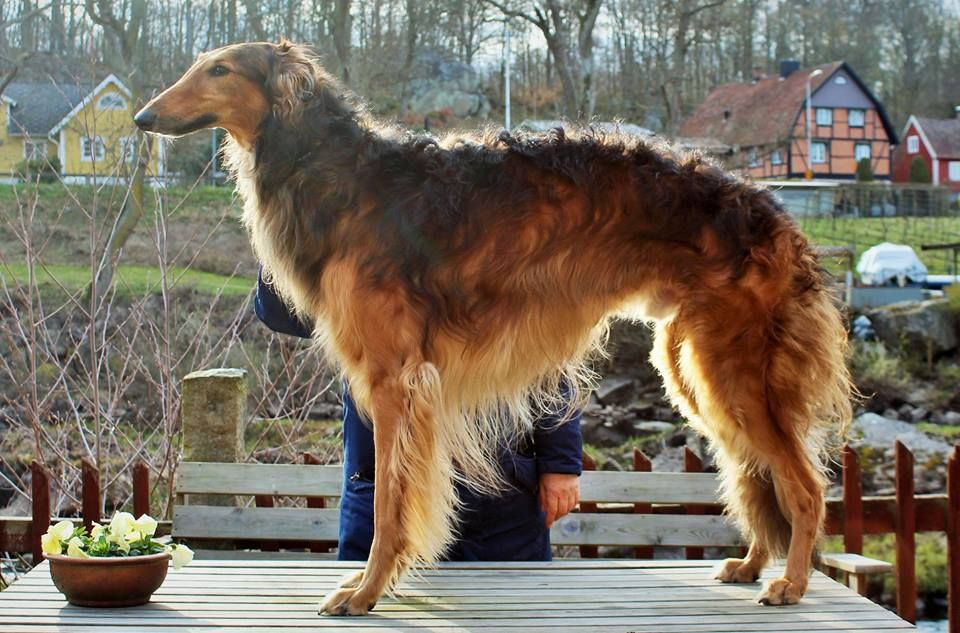
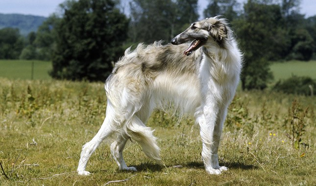
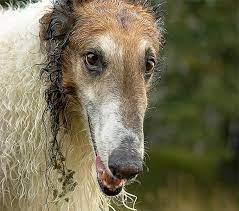
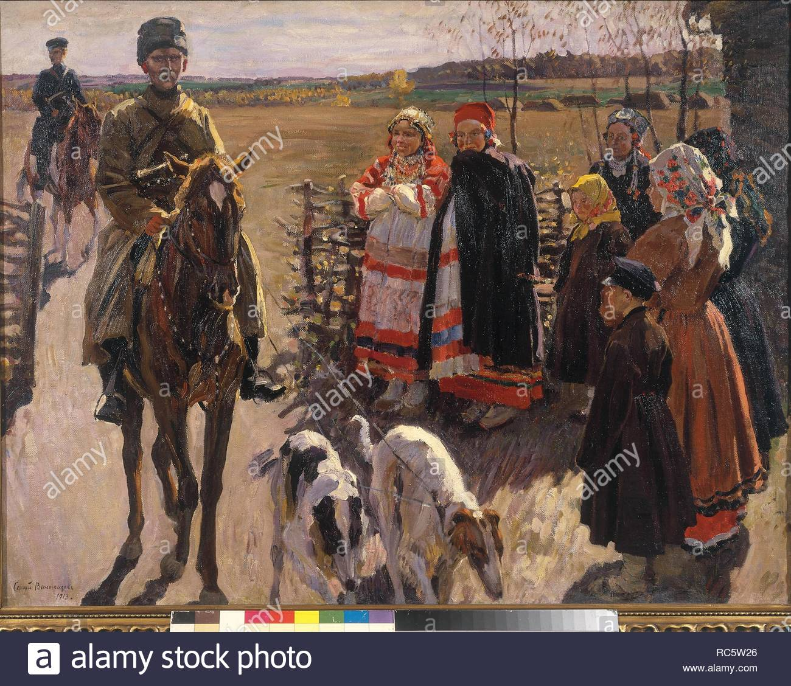
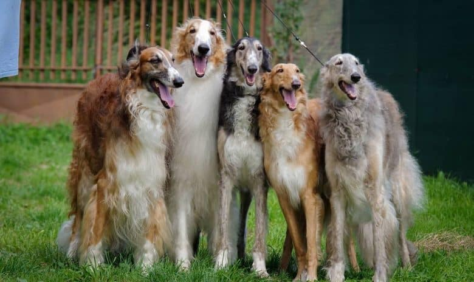

Borzoi in Russia have a long history as dogs of the nobility. The Kennel of Grand Duke Dmitry in Perchino can be found in almost all Borzoi bloodlines today
Borzoi are not only heavy dogs, but very long as well. A large male can easily reach over siz feet tall when standing on its legs!

While all colours are accepted, white self Borzoi are among the most popular
A red Borzoi being stacked
A silver brindle Borzoi in situ
Despite being hunting dogs, Borzoi tend to be silly and not take themselves seriously

Even female dogs are huge in the breed, and can often dwarf their human owners while standing
Borzoi have historically been run in packs during hunts. They've often been the muses of Russian painters
Borzoi come in almost any colour. As a result, having a "rainbow" pack is quite common!